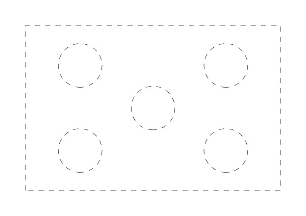

Ozobot
初階
顏色程式碼_簡單版 / 顏色程式碼 / 校正和讀取程式 / 學生自由創作作品
超酷裝備參考
| 週次 | 圖檔 | 介紹 | 教案 | 補充教案 | 程式比賽 | 主題課程-太空之旅 |
|---|---|---|---|---|---|---|
| 1 |  |
快速運輸機器人 火星好奇號流浪者 上學的機器人 循線火車 |
循線機器人 | 太陽家庭 太陽系的形成 太陽系行星介紹 |
||
| 2 |  |
機器人的本領 | 裝備-臉 | 速度 | ||
| 3 |  |
機器人去那裡 | 速度、方向 | |||
| 4 |  |
顏色程式碼畫法 | 速度、方向、動作 | |||
| 5 |  |
復活節的由來 什麼是復活節呢？ |
復活節的彩蛋 | 裝備-兔子耳 | 速度、方向、動作 | |
| 6 |  |
飛行過河 | 裝備-飛行裝備 | 速度、方向、動作 | ||
| 7 |  |
環島旅行 | 裝備-旅行裝備 | 綜合運用 | ||
| 8 |  |
認識再生能源 再生能源超級爭霸戰 「化石能源」是什麼？ |
能源巡航 | 速度、方向、動作 | ||
| 9 |  |
全球國旗 | 搶旗 | 裝備-大盜 | 綜合運用 | |
| 10 |  |
大隊接力 | 裝備-賽跑選手 | 綜合運用 | ||
| 11 |  |
愛心拼字 | 速度、方向、動作 | |||
| 12 |  |
淺談你我都知道的資源回收 資源回收勿亂丟，回收愛地球 三分鐘教你輕鬆愛世界 |
資源回收 | 速度、方向、動作 | ||
| 13 |  |
兔子找紅蘿蔔 | 速度、方向、動作 | |||
| 14 |  |
歐寶要回家 | 速度、方向、動作 | |||
| 15 |  |
奪寶 | 速度、方向、動作 | |||
| 16 |  | 推雪球 | 綜合運用 | |||
| 17 |  |
保齡球大賽 | 綜合運用 | |||
| 上帝創造世界 | 創世紀 | |||||
| 兒童聖經故事 11 .挪亞 | 挪亞方舟 | |||||
| 一日動物保育員 | 動物保育員 | |||||
| 醫生醫院遊戲 | 醫師 | |||||
| 透視太空人的日常 太陽家庭 |
太空人 |